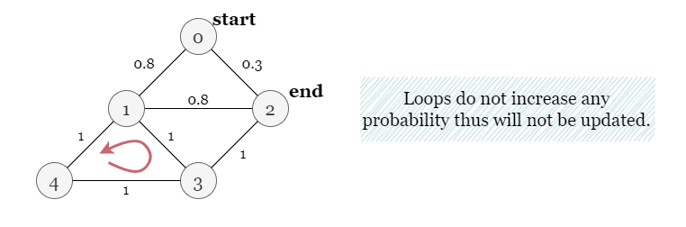
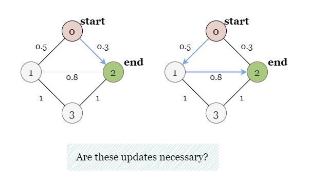
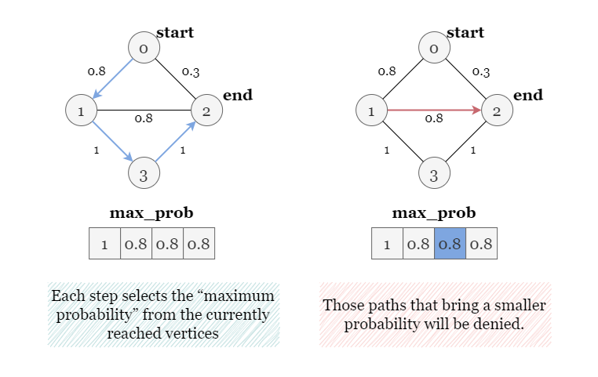

1 / 12
If you are not familiar with the Bellman-Ford algorithm, please refer to our Bellman-Ford Algorithm Explore Card. For the sake of brevity, we will focus only on the usage of Bellman-Ford and not the implementation details.
The algorithm works by relaxing edges in the graph, meaning that it tries to improve the shortest path estimate for each node in the graph until the solution is found.
Bellman-Ford is typically used to find the shortest path in a weighted graph. In this problem, instead of the shortest distance, we are looking for the maximum probability. The length of a path is the sum of the weights of its edges. Here, the probability of a path equals the product of the probabilities of its edges.
Initially, we set the probability to reach the starting node start as 1 and all other
probabilities as 0. Then we iteratively relax the edges of the graph by updating the probability to
each node if a higher probability is found.
Considering that a path in the graph without a cycle contains at most n - 1 edges, the process is
repeated n - 1 times, which is enough to relax every edge of every possible path.
u from the starting
node along the path that contains only one edge (u, v).
u from the starting
node along the path that contains two edges (including (u, v)).
After n - 1 rounds, we have updated max_prob[end] to be the maximum probability of reaching
end from the staring node along every possible path.
Initialize an array maxProb as the maximum probability to reach each node from the staring node,
set maxProb[start] as 1.
Relax all edges: for each edge (u, v), if a higher probability of reaching u
through this edge is found, update the max_prob[u] as max_prob[u] = max_prob[v] *
path_prob, if a higher probability to reach v through this edge is found, update the
max_prob[v].
If we are unable to update any node with a higher probability, we can stop the iteration by proceeding to
step 4. Otherwise, repeat step 2 until all edges are relaxed n - 1 times.
Return max_prob[end].
Java
class Solution {
public double maxProbability(int n, int[][] edges, double[] succProb, int start, int end) {
double[] maxProb = new double[n];
maxProb[start] = 1.0;
for (int i = 0; i < n - 1; i++) {
boolean hasUpdate = false;
for (int j = 0; j < edges.length; j++) {
int u = edges[j][0];
int v = edges[j][1];
double pathProb = succProb[j];
if (maxProb[u] * pathProb > maxProb[v]) {
maxProb[v] = maxProb[u] * pathProb;
hasUpdate = true;
}
if (maxProb[v] * pathProb > maxProb[u]) {
maxProb[u] = maxProb[v] * pathProb;
hasUpdate = true;
}
}
if (!hasUpdate) {
break;
}
}
return maxProb[end];
}
}
Python3
class Solution:
def maxProbability(self, n: int, edges: List[List[int]], succProb: List[float], start: int, end: int) -> float:
max_prob = [0] * n
max_prob[start] = 1
for i in range(n - 1):
# If there is no larger probability found during an entire round of updates,
# stop the update process.
has_update = 0
for j in range(len(edges)):
u, v = edges[j]
path_prob = succProb[j]
if max_prob[u] * path_prob > max_prob[v]:
max_prob[v] = max_prob[u] * path_prob
has_update = 1
if max_prob[v] * path_prob > max_prob[u]:
max_prob[u] = max_prob[v] * path_prob
has_update = 1
if not has_update:
break
return max_prob[end]
Let nn be the number of nodes and mm be the number of edges.
Time complexity: O(n⋅m)O(n \cdot m)
n - 1 times, each round contains an iteration
over all m edges.
Space complexity: O(n)O(n)
The Shortest Path Faster Algorithm (SPFA) is an improvement of the Bellman–Ford algorithm which computes single-source shortest paths in a weighted directed graph.
We start at node start and traverse all its neighbors, calculating the probability of moving from start
to each neighbor. We then add these neighbors to a queue, and continue the process for all nodes in the queue until
we empty the queue.
The key is maintaining a running maximum probability for each node, and using this maximum to calculate the probabilities for its neighbors. If the probability of traveling from the starting node to a neighbor node through a specific edge is greater than the current maximum probability for that neighbor, we update the maximum probability of this neighbor node, and add this neighbor node to the queue.
Another key point to note is how we calculate the probability of traveling from start to a neighbor
node. We are given a set of edge weights that represent the probabilities of moving from one node to another. To
calculate the probability of traveling from the starting node to a neighbor node through a specific edge, we simply
multiply the edge weight (i.e., the probability of traveling through that edge) by the maximum probability of
reaching the current node from the starting node. This gives us the probability of reaching the neighbor node
through the current edge.
Take the slides below as an example:
You might wonder, will repeatedly adding the same node back to the queue cause an infinite loop and result in a timeout?
The answer is NO, because we only update the probability of reaching a neighbor node, say nxt_node and
add it back to queue if the current path increases the probability of reaching nxt_node
from the starting node. Moreover, the weight (probability) of each path is less than or equal to 1. Therefore, even
if the graph contains a cycle, the product of the probabilities of all edges in the cycle is still less than or
equal to 1. Since loops do not increase the probability of reaching a node, paths that contain loops will be
excluded from consideration and not added to the queue.

Initialize an empty queue queue to store nodes that need to be visited.
Initialize an array max_prob to store the maximum probability of reaching each node from the
starting node. Set the probability of the starting node max_prob[start] as 1, and the
probability of all other nodes as 0.
Add the starting node start to the queue.
While queue is not empty, we remove the first node cur_node from the queue.
For each neighbor of nxt_node, calculate the probability of traveling from the starting node to
the nxt_node through the current edge (cur_node --- nxt_node), and update the
maximum probability for this neighbor max_prob[nxt_node] if necessary.
If the probability to this neighbor node is increased, add nxt_node to queue.
Repeat steps 4-6 until queue is empty.
Return max_prob[end], the maximum probability of reaching the end node end from the
starting node.
Java
class Solution {
public double maxProbability(int n, int[][] edges, double[] succProb, int start, int end) {
Map>> graph = new HashMap<>();
for (int i = 0; i < edges.length; i++) {
int u = edges[i][0], v = edges[i][1];
double pathProb = succProb[i];
graph.computeIfAbsent(u, k -> new ArrayList<>()).add(new Pair<>(v, pathProb));
graph.computeIfAbsent(v, k -> new ArrayList<>()).add(new Pair<>(u, pathProb));
}
double[] maxProb = new double[n];
maxProb[start] = 1d;
Queue queue = new LinkedList<>();
queue.offer(start);
while (!queue.isEmpty()) {
int curNode = queue.poll();
for (Pair neighbor : graph.getOrDefault(curNode, new ArrayList<>())) {
int nxtNode = neighbor.getKey();
double pathProb = neighbor.getValue();
// Only update maxProb[nxtNode] if the current path increases
// the probability of reach nxtNode.
if (maxProb[curNode] * pathProb > maxProb[nxtNode]) {
maxProb[nxtNode] = maxProb[curNode] * pathProb;
queue.offer(nxtNode);
}
}
}
return maxProb[end];
}
}
Python3
class Solution:
def maxProbability(self, n: int, edges: List[List[int]], succProb: List[float], start: int, end: int) -> float:
graph = defaultdict(list)
for i, (a, b) in enumerate(edges):
graph[a].append([b, succProb[i]])
graph[b].append([a, succProb[i]])
max_prob = [0.0] * n
max_prob[start] = 1.0
queue = deque([start])
while queue:
cur_node = queue.popleft()
for nxt_node, path_prob in graph[cur_node]:
# Only update max_prob[nxt_node] if the current path increases
# the probability of reach nxt_node.
if max_prob[cur_node] * path_prob > max_prob[nxt_node]:
max_prob[nxt_node] = max_prob[cur_node] * path_prob
queue.append(nxt_node)
return max_prob[end]
Let nn be the number of nodes and mm be the number of edges.
Time complexity: O(n⋅m)O(n \cdot m)
Space complexity: O(n+m)O(n + m)
graph based on all edges, which takes O(m)O(m) space.
max_prob of size O(n)O(n) and a
queue of vertices queue. In the worst-case scenario, there are O(m)O(m)
nodes in queue at the same time.
If you are not familiar with the Dijkstra's algorithm, please refer to our Dijkstra's Algorithm Explore Card. For the sake of brevity, we will focus on the usage of the algorithm and not implementation details.
In BFS, we are exploring the graph in a breadth-first manner, which may not always lead to the shortest path. This is
because BFS does not take into account the weights of the edges and only considers the number of hops. As shown in
the picture below, even though the two paths to end
0 -- 20 -- 1 -- 2
In contrast, Dijkstra's algorithm takes into account the weights of the edges and always guarantees to find the highest probability from the source node to any other node in the graph. This is where Dijkstra's algorithm becomes more suitable than BFS, as it takes into account the weights (probabilities) of the edges and can find the path with the highest probability of reaching the end node.

We start from the starting node start, and consider its neighbors one by one, updating the probability
to each neighboring node nxt_node if the probability of reaching nxt_node through the
current node cur_node is higher than the previous stored probability of reaching nxt_node
(by other paths). In order to always select the node with the highest reaching probability, we use a priority queue
pq to store the nodes to visit, where the node with the highest probability of being reached from the
starting node has the highest priority.
Initialize a priority queue pq to store nodes that need to be visited, and an array max_prob
to store the maximum probability to reach each node from the starting node. Set the probability of the
starting node as 1, and the probability of all other nodes as 0.
Add the starting node start and its probability to the priority queue.
While pq is not empty, remove cur_node, the node with the highest priority from it.
For each neighbor nxt_node of the current node cur_node, calculate the probability
of traveling from the starting node to the nxt_node through the current edge cur_node ---
nxt_node, and update the maximum probability of nxt_node if necessary. To update the
maximum probability, compare the product of the probability with the current node and the probability of the
edge cur_node --- nxt_node, with the current maximum probability to the neighbor node. If the
product is larger than the maximum probability stored in max_prob[nxt_node], we update the
maximum probability max_prob[nxt_node] as their product.
If the neighbor node nxt_node has not been visited, we add it and its probability to the pq.
Repeat steps 3-5 until the priority queue is empty or the ending node end has been reached.
Return max_prob[end].
Java
class Solution {
public double maxProbability(int n, int[][] edges, double[] succProb, int start, int end) {
Map>> graph = new HashMap<>();
for (int i = 0; i < edges.length; i++) {
int u = edges[i][0], v = edges[i][1];
double pathProb = succProb[i];
graph.computeIfAbsent(u, k -> new ArrayList<>()).add(new Pair<>(v, pathProb));
graph.computeIfAbsent(v, k -> new ArrayList<>()).add(new Pair<>(u, pathProb));
}
double[] maxProb = new double[n];
maxProb[start] = 1d;
PriorityQueue> pq = new PriorityQueue<>((a, b) -> -Double.compare(a.getKey(), b.getKey()));
pq.add(new Pair<>(1.0, start));
while (!pq.isEmpty()) {
Pair cur = pq.poll();
double curProb = cur.getKey();
int curNode = cur.getValue();
if (curNode == end) {
return curProb;
}
for (Pair nxt : graph.getOrDefault(curNode, new ArrayList<>())) {
int nxtNode = nxt.getKey();
double pathProb = nxt.getValue();
if (curProb * pathProb > maxProb[nxtNode]) {
maxProb[nxtNode] = curProb * pathProb;
pq.add(new Pair<>(maxProb[nxtNode], nxtNode));
}
}
}
return 0d;
}
}
Python3
class Solution:
def maxProbability(self, n: int, edges: List[List[int]], succProb: List[float], start: int, end: int) -> float:
graph = defaultdict(list)
for i, (u, v) in enumerate(edges):
graph[u].append((v, succProb[i]))
graph[v].append((u, succProb[i]))
max_prob = [0.0] * n
max_prob[start] = 1.0
pq = [(-1.0, start)]
while pq:
cur_prob, cur_node = heapq.heappop(pq)
if cur_node == end:
return -cur_prob
for nxt_node, path_prob in graph[cur_node]:
if -cur_prob * path_prob > max_prob[nxt_node]:
max_prob[nxt_node] = -cur_prob * path_prob
heapq.heappush(pq, (-max_prob[nxt_node], nxt_node))
return 0.0
Note that Python's heapq module only implements min heaps. Since we want higher probabilities to be popped first, we need a max heap. To fix this, we multiply the probabilities by
-1.
Let nn be the number of nodes and mm be the number of edges.
Time complexity: O(m+n⋅logn)O(m + n\cdot\log n) when a Fibonacci heap is used, or O(n+m⋅logn)O(n + m\cdot\log n) for a Binary heap.
We build a hash map graph based on all edges, which takes O(m)O(m)
time.
If we use a Fibonacci heap to implement the max-heap, extracting the minimum element takes O(logn)O(\log n) time
while key decreasing operation takes amortized O(1)O(1)
time, so the total time complexity of all the operations on pq would be O(m+n⋅logn)O(m + n\cdot\log n).
If we use a Binary heap, the time complexity of all the operations on pq would be O(n+m⋅logn)O(n + m\cdot\log n),
You can also refer to our Dijkstra's Algorithm Explore Card for details on the complexity analysis.
Space complexity: O(n+m)O(n + m)
We build a hash map graph based on all edges, which takes O(m)O(m)
space.
The algorithm stores the probability array max_prob of size O(n)O(n).
We use a priority queue to keep track of all nodes to be visited, there are at most nn nodes in pq.
To sum up, the overall space complexity is O(n+m)O(n + m).